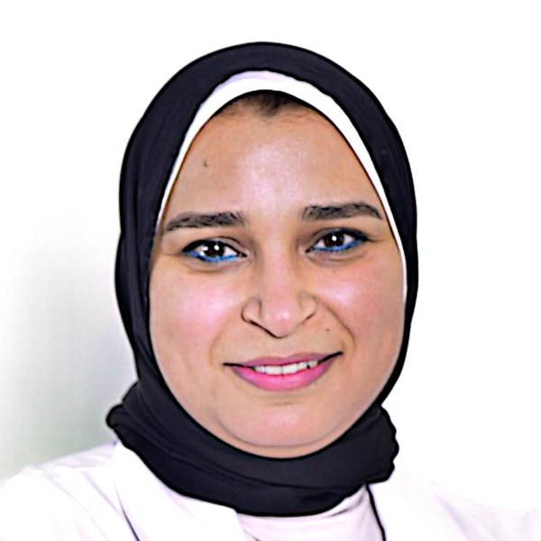

Dr. Asmaa Saber Ghaly
- Associate Professor of Obstetric & Gynecologic Nursing, Faculty of Nursing, Alexandria University
- Assistant Professor, College of Nursing, Sulaiman Alrajhi University
I teach and research women’s health and nursing education. For more than 20 years I have taught nursing students in Egypt and Saudi Arabia, and I bring simulation and virtual simulation into the classroom so that students feel ready for real clinical care.
Research
My work sits where women’s health meets nursing education: improving care for women across their lives, and improving how we prepare the nurses who care for them.
Maternal & women’s health
Antenatal, intrapartum and postnatal care; dysmenorrhea; menopause; family planning; breastfeeding; women’s quality of life in Saudi Arabia and Egypt.
Nursing education
Virtual simulation, virtual reality, structured debriefing, learning approaches, academic stress and emotional intelligence among nursing students.
Patient safety & community health
Infection prevention, medical-error awareness, needle-stick injury prevention, and community health awareness programmes.
Doctoral research
“The Effect of Ginger Oil on Symptoms of Primary Dysmenorrhea.” PhD in Obstetric and Gynecologic Nursing, Faculty of Nursing, Alexandria University, 2015.
Publications
30 journal articles, a book chapter, a conference paper and a preprint (2019–2026), with publishers including Elsevier, SAGE, BMC and PLOS. Titles link to the article where a DOI is available.
Teaching & supervision
I teach theory, laboratory and clinical courses to BSN, Nursing Diploma, Bridging and MSc students. I want the classroom to feel like a real extension of the care setting.
King Faisal University (2019–2026)
- Provider of Care 2 (Maternity): theory and practical
- Health Assessment and Advanced Health Assessment (MSc)
- Reproductive, Child and Family Health
- Interprofessional Education, Communication and Collaborative Practice
- Quality in Health Care; Basic Concepts in Nursing
- Capstone project supervision
Alexandria University (2005–present)
- Obstetric and Gynecologic Nursing: theory and clinical training at El-Shatby University Hospital
- Clinical training for Master’s and Nursing Diploma students
- New Issues & Trends in Nursing; Introduction to Nursing Research
- Co-author of the department’s Obstetric and Gynecologic Nursing textbooks
Postgraduate supervision
- Co-supervisor of two defended Master’s theses, Alexandria University
- Supervision committee member for one further Master’s thesis and one PhD dissertation
Leadership & quality
- Deputy Head, Training and Internship Unit, King Faisal University (2023)
- Chair, Internship Committee (2021–2024)
- Accreditation preparation at King Faisal University and NAQAAE accreditation at Alexandria University
Talks & workshops
- November 2025 · Dubai, UAE“Posture, Power, and Pain: The Female Back Story”
5th International Conference on Nursing and Women’s Healthcare
- March 2024 · Riyadh, Saudi Arabia2nd Annual International Midwifery Conference
Saudi Association of Midwifery
- October 2021 · King Faisal University“New Trends in Obstetrics & Gynecology Nursing”
Seminar, College of Applied Medical Sciences
- December 2017 · Alexandria University14th International Scientific Conference
Research presenter and organising committee member
- 2022–2026 · King Faisal UniversityInternship Orientation Course
Annual lecturer; three certificates of appreciation
- 2018 · Alexandria“Emergency in Obstetrics”
Six-day workshop with the Alexandria Regional Center for Women’s Health and Development
- 2017 · Alexandria University“ICU and Emergency Care in Obstetrics and Gynecology”
With the Faculty of Medicine and the Fellowship Program
- 2016 · Alexandria University“Obstetric Emergency Care: Golden Hours and Beyond”
Workshop alongside the department’s annual meeting
CV at a glance
Education
- PhD, Obstetric & Gynecologic Nursing, Alexandria University (2015)
- MSc, Obstetric & Gynecologic Nursing, Alexandria University (2009)
- BSc Nursing, Excellent with Honours, Alexandria University (2003)
Appointments
- Assistant Professor, Sulaiman Alrajhi University (2026–)
- Associate Professor, Alexandria University (2021–)
- Assistant Professor, King Faisal University (2019–2026)
- Lecturer and Demonstrator, Alexandria University (2005–2015)
Certifications & memberships
- Advanced International Trainer Diploma; Training of Trainers (TOT)
- CTG Interpretation and Fetal Monitoring (SCFHS-accredited CME)
- Sigma Theta Tau International; National League for Nursing
- Languages: Arabic, English, German (B1)
Latest research in nursing
The newest articles indexed in PubMed over the last 60 days, updated automatically every time you open this page. Pick a topic and click a title to read the abstract.
Useful resources
Free, trusted sites I recommend to my students and fellow researchers.
🩺 For nursing students
- WHO guidelinesInternational clinical and public-health guidelines, including maternal and newborn care.
- NICE guidanceEvidence-based UK guidelines, e.g. antenatal, intrapartum and postnatal care.
- ACOG clinical guidanceObstetric and gynecologic practice bulletins and committee opinions.
- CDC infection controlStandard precautions, hand hygiene and isolation guidance.
- DailyMedOfficial drug information and package inserts.
- MedlinePlusPlain-language health information, useful for patient teaching.
- OpenStax nursing textbooksFree, peer-reviewed nursing textbooks.
- OpenWHOFree online courses with certificates from the World Health Organization.
- Saudi Commission for Health SpecialtiesProfessional classification, licensing exams (SNLE) and CME.
- NCSBN: NCLEXOfficial information about the NCLEX licensure exam.
🔬 For healthcare researchers
- PubMedFree search of biomedical and nursing literature.
- Cochrane LibrarySystematic reviews and evidence summaries.
- Saudi Digital LibraryFull-text databases for Saudi university staff and students.
- Egyptian Knowledge BankFree access to major publishers for researchers in Egypt.
- EQUATOR NetworkReporting checklists: CONSORT, STROBE, PRISMA and more.
- JBI critical appraisal toolsChecklists to appraise studies for reviews and evidence-based practice.
- PROSPERORegister your systematic review protocol.
- ZoteroFree reference manager.
- jamoviFree, easy statistics software (an alternative to SPSS).
- Think. Check. Submit.Check a journal before you submit, and avoid predatory publishers.
Contact
For research collaboration, speaking invitations or student enquiries: